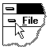

Use this command to close all windows containing the active case. You should save changes to your document before you close it. If you close a document without saving, you lose all changes made since the last time you saved it. Before closing an untitled document, this program displays the Save As dialog box and suggests that you name and save the document.
You can also close a document by using the Close icon on the document's window, as shown below:
